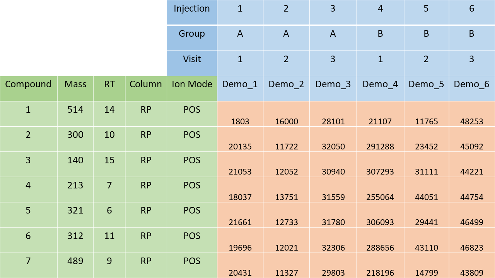

Non-targeted metabolomics preprocessing and data wrangling
Anton Klåvus, Vilhelm Suksi
2025-10-17
Source:vignettes/introduction.Rmd
introduction.RmdMotivation
From the perspective of metabolites as the continuation of the central dogma of biology, metabolomics provides the closest link to many phenotypes of interest. This makes metabolomics research promising in teasing apart the complexities of living systems, attracting many new practitioners.
The notame R package was developed in parallel with a protocol article as a general guideline for data analysis in untargeted metabolomics studies (Klåvus et al. 2020). The notame package was split into notame, notameViz and notameStats for Bioconductor. The primary goal is identifying quality, interesting features for laborious downstream steps relating to biological context, such as metabolite identification and pathway analysis. Bioconductor packages with complementary functionality in Bioconductor include pmp, phenomis and qmtools; notame packages brings partially overlapping and new functionality to the table. There are also Bioconductor packages for preprocessing, metabolite identification and pathway analysis. Together, notame, Bioconductor’s dependency management and other Bioconductor functionality allow for quality, reproducible metabolomics research. Please see the notame website and protocol article for more information (Klåvus et al. 2020).
Installation
To install notame, install BiocManager first, if it is not installed. Afterwards use the install function from BiocManager.
if (!requireNamespace("BiocManager", quietly = TRUE))
install.packages("BiocManager")
BiocManager::install("notame")
library(notame)Drift correction
Untargeted LC-MS metabolomics data usually suffers from signal intensity drift, i.e. systematic variation in the signal intensity as a function of injection order. Features of a dataset often have very different drift patterns. This means that to correct for the drift, we need a tool that can adapt to different drift patterns.
The approach used in this package models the drift separately for each feature, using pooled QC samples and cubic spline regression. The smoothing parameter controls the “wiggliness” of the function: the larger the smoothing parameter, the closer the spline is to a linear function. By default, the smoothing parameter is chosen automatically using cross validation, and can vary between 0.5 and 1.5, where 1.5 is large enough to guarantee that the curve is practically linear. This interval seems to work well in practice.
We run the drift correction on log-transformed data. Log-transformed data follows the assumptions of the drift function model better, and avoids some practical issues. The corrected feature abundance for a sample with injection order is then computed using the following formula:
library(notame)
## Loading required package: ggplot2
## Loading required package: SummarizedExperiment
## Loading required package: MatrixGenerics
## Loading required package: matrixStats
##
## Attaching package: 'MatrixGenerics'
## The following objects are masked from 'package:matrixStats':
##
## colAlls, colAnyNAs, colAnys, colAvgsPerRowSet, colCollapse,
## colCounts, colCummaxs, colCummins, colCumprods, colCumsums,
## colDiffs, colIQRDiffs, colIQRs, colLogSumExps, colMadDiffs,
## colMads, colMaxs, colMeans2, colMedians, colMins, colOrderStats,
## colProds, colQuantiles, colRanges, colRanks, colSdDiffs, colSds,
## colSums2, colTabulates, colVarDiffs, colVars, colWeightedMads,
## colWeightedMeans, colWeightedMedians, colWeightedSds,
## colWeightedVars, rowAlls, rowAnyNAs, rowAnys, rowAvgsPerColSet,
## rowCollapse, rowCounts, rowCummaxs, rowCummins, rowCumprods,
## rowCumsums, rowDiffs, rowIQRDiffs, rowIQRs, rowLogSumExps,
## rowMadDiffs, rowMads, rowMaxs, rowMeans2, rowMedians, rowMins,
## rowOrderStats, rowProds, rowQuantiles, rowRanges, rowRanks,
## rowSdDiffs, rowSds, rowSums2, rowTabulates, rowVarDiffs, rowVars,
## rowWeightedMads, rowWeightedMeans, rowWeightedMedians,
## rowWeightedSds, rowWeightedVars
## Loading required package: GenomicRanges
## Loading required package: stats4
## Loading required package: BiocGenerics
## Loading required package: generics
##
## Attaching package: 'generics'
## The following objects are masked from 'package:base':
##
## as.difftime, as.factor, as.ordered, intersect, is.element, setdiff,
## setequal, union
##
## Attaching package: 'BiocGenerics'
## The following objects are masked from 'package:stats':
##
## IQR, mad, sd, var, xtabs
## The following objects are masked from 'package:base':
##
## anyDuplicated, aperm, append, as.data.frame, basename, cbind,
## colnames, dirname, do.call, duplicated, eval, evalq, Filter, Find,
## get, grep, grepl, is.unsorted, lapply, Map, mapply, match, mget,
## order, paste, pmax, pmax.int, pmin, pmin.int, Position, rank,
## rbind, Reduce, rownames, sapply, saveRDS, table, tapply, unique,
## unsplit, which.max, which.min
## Loading required package: S4Vectors
##
## Attaching package: 'S4Vectors'
## The following object is masked from 'package:utils':
##
## findMatches
## The following objects are masked from 'package:base':
##
## expand.grid, I, unname
## Loading required package: IRanges
## Loading required package: Seqinfo
## Loading required package: Biobase
## Welcome to Bioconductor
##
## Vignettes contain introductory material; view with
## 'browseVignettes()'. To cite Bioconductor, see
## 'citation("Biobase")', and for packages 'citation("pkgname")'.
##
## Attaching package: 'Biobase'
## The following object is masked from 'package:MatrixGenerics':
##
## rowMedians
## The following objects are masked from 'package:matrixStats':
##
## anyMissing, rowMedians
data(toy_notame_set, package = "notame")
se <- toy_notame_set
names(assays(se)) <- "rawbundances"
# Mark missing values as NA
se <- mark_nas(se, value = 0)
# Correct drift
se <- correct_drift(se, name = "dc")
## INFO [2025-10-17 09:07:04] Starting drift correction
## INFO [2025-10-17 09:07:06] Recomputing quality metrics for drift corrected data
## INFO [2025-10-17 09:07:06] Drift correction performed
## INFO [2025-10-17 09:07:06] Inspecting drift correction results
## INFO [2025-10-17 09:07:06] Original quality metrics missing, recomputing
## INFO [2025-10-17 09:07:06] Drift correction results inspected: Drift_corrected: 100%Flagging low quality compounds
LC-MS metabolomics datasets contain a significant number of
low-quality features. We use three established quality metrics based on
pooled QC samples to flag those features: detection rate, relative
standard deviation and dispersion ratio(Broadhurst et al. 2018). We are using the
robust versions of relative standard deviation and dispersion ratio as
they are less affected by a single outlying QC and since the original
RSD works best if the data is normally distributed, which is often not
the case with our data. In addition, one can use
flag_contaminants() to, well, flag contaminants.
By default, we use a slightly more lenient detection threshold, 0.5. The recommended limits for RSD and D-ratio are 0.2 and 0.4, respectively. Since we are using the robust alternatives, we have added an additional condition: signals with classic RSD, RSD* and basic D-ratio all below 0.1 are kept. This additional condition prevents the removal of signals with very low values in all but a few samples. These signals tend to have a very high value of D- ratio*, since the median absolute deviation of the biological samples is not affected by the large concentration in a handful of samples, causing the D- ratio* to overestimate the significance of random errors in measurements of QC samples. Thus, other quality metrics are applied, with a conservative limit of 0.1 to ensure that only good quality signals are kept this way.
se <- flag_detection(se, assay.type = "dc")
## INFO [2025-10-17 09:07:06]
## 1% of features flagged for low detection rate
se <- flag_quality(se, assay.type = "dc")
## INFO [2025-10-17 09:07:06]
## 71% of features flagged for low quality
head(rowData(se)$Flag)
## [1] NA "Low_quality" "Low_quality" "Low_quality" "Low_quality"
## [6] "Low_quality"Flagged features are not removed from the data, but the flag
information is stored in the “Flag” column of rowData(se).
In notame, notameViz and notameStats packages, the flagged features are
silently ignored in operations that involve muliple features at a time,
including random forest imputation, PCA visualization and multivariate
statistical models. For feature-wise statistics, the statistical model
is fit for flagged features, but FDR correction is only done for
non-flagged features. One can also set all_features = TRUE
in these functions to include all features in the model.
Imputation of missing values
LC-MS data often contain missing values. Note that even if some statistical methods state that they “can deal with missing values”, they sometimes just ignore samples or variables with at least one missing value, or impute the missing values before applying the actual method.
There are many different imputation strategies out there. We have tested a bunch of them on our data and we concluded that random forest imputation works best for our data (Kokla et al. 2019). To be brief, the method predicts the missing part of the data by fitting a random forest on the observed part of the data (Stekhoven and Bühlmann 2011). The downside of random forest imputation is that it is rather slow. Thus, we recommend running the imputation separately for each analysis mode if the dataset has more than 100 samples, or if there are lots of missing values.
set.seed(2025)
se <- impute_rf(se, assay.type = "dc", name = "imputed")
## INFO [2025-10-17 09:07:06]
## Starting random forest imputation at 2025-10-17 09:07:06.923552
## INFO [2025-10-17 09:07:07] Out-of-bag error in random forest imputation: 0.645
## INFO [2025-10-17 09:07:07] Random forest imputation finished at 2025-10-17 09:07:07.507061Simple imputation strategies included in impute_simple()
are imputation by constant value, imputation by mean, median, minimum or
half minimum value or by a small random value. Simple imputation
strategies rely on the assumption that missingness is mostly caused by
the fact that the metabolite concentration is below the detection
limit.
Utilities
Data can be read with import_from_excel(), which
includes checks and preparation of metadata. To accommodate typical
output from peak-picking software such as Agilent’s MassHunter or
MS-DIAL, the output is transformed into a spreadsheet for
import_from_excel(). Alternatively, data in R can be
wrangled and passed to the SummarizedExperiment()
constructor.

Structure of spreadsheet for import_from_excel().
General utilities include combined_data() for
representing the instance in a data.frame suitable for
plotting and various functions for data wrangling. For keeping track of
the analysis, notame offers a logging system operated using
init_log(), log_text() and
finish_log(). notame also keeps track of all the external
packages used, offering you references for each. To see and log a list
of references, use citations().
Parallellization is used in many feature-wise calculations and is provided by the BiocParallel package. BiocParallel defaults to a parallel backend. For small-scale testing on Windows, it can be quicker to use serial execution:
BiocParallel::register(BiocParallel::SerialParam())Authors & Acknowledgements
The first version of notame was written by Anton Klåvus for his master’s thesis in Bioinformatics at Aalto university (published under former name Anton Mattsson), while working for University of Eastern Finland and Afekta Technologies. The package is inspired by analysis scripts written by Jussi Paananen and Oskari Timonen. The algorithm for clustering molecular features originating from the same compound is based on MATLAB code written by David Broadhurst, Professor of Data Science & Biostatistics in the School of Science, and director of the Centre for Integrative Metabolomics & Computational Biology at the Edith Covan University.
If you find any bugs or other things to fix, please submit an issue on GitHub! All contributions to the package are always welcome!
Session information
## R version 4.5.1 (2025-06-13)
## Platform: x86_64-pc-linux-gnu
## Running under: Ubuntu 24.04.3 LTS
##
## Matrix products: default
## BLAS: /usr/lib/x86_64-linux-gnu/openblas-pthread/libblas.so.3
## LAPACK: /usr/lib/x86_64-linux-gnu/openblas-pthread/libopenblasp-r0.3.26.so; LAPACK version 3.12.0
##
## locale:
## [1] LC_CTYPE=en_US.UTF-8 LC_NUMERIC=C
## [3] LC_TIME=en_US.UTF-8 LC_COLLATE=en_US.UTF-8
## [5] LC_MONETARY=en_US.UTF-8 LC_MESSAGES=en_US.UTF-8
## [7] LC_PAPER=en_US.UTF-8 LC_NAME=C
## [9] LC_ADDRESS=C LC_TELEPHONE=C
## [11] LC_MEASUREMENT=en_US.UTF-8 LC_IDENTIFICATION=C
##
## time zone: UTC
## tzcode source: system (glibc)
##
## attached base packages:
## [1] stats4 stats graphics grDevices utils datasets methods
## [8] base
##
## other attached packages:
## [1] notame_0.99.7 SummarizedExperiment_1.39.2
## [3] Biobase_2.69.1 GenomicRanges_1.61.5
## [5] Seqinfo_0.99.2 IRanges_2.43.5
## [7] S4Vectors_0.47.4 BiocGenerics_0.55.3
## [9] generics_0.1.4 MatrixGenerics_1.21.0
## [11] matrixStats_1.5.0 ggplot2_4.0.0
## [13] BiocStyle_2.37.1
##
## loaded via a namespace (and not attached):
## [1] gtable_0.3.6 xfun_0.53 bslib_0.9.0
## [4] htmlwidgets_1.6.4 lattice_0.22-7 vctrs_0.6.5
## [7] tools_4.5.1 parallel_4.5.1 missForest_1.5
## [10] tibble_3.3.0 pkgconfig_2.0.3 Matrix_1.7-4
## [13] RColorBrewer_1.1-3 rngtools_1.5.2 S7_0.2.0
## [16] desc_1.4.3 lifecycle_1.0.4 compiler_4.5.1
## [19] farver_2.1.2 textshaping_1.0.4 codetools_0.2-20
## [22] htmltools_0.5.8.1 sass_0.4.10 yaml_2.3.10
## [25] pillar_1.11.1 pkgdown_2.1.3 crayon_1.5.3
## [28] jquerylib_0.1.4 BiocParallel_1.43.4 cachem_1.1.0
## [31] DelayedArray_0.35.3 doRNG_1.8.6.2 iterators_1.0.14
## [34] foreach_1.5.2 abind_1.4-8 tidyselect_1.2.1
## [37] digest_0.6.37 dplyr_1.1.4 bookdown_0.45
## [40] fastmap_1.2.0 grid_4.5.1 cli_3.6.5
## [43] SparseArray_1.9.1 magrittr_2.0.4 S4Arrays_1.9.1
## [46] randomForest_4.7-1.2 withr_3.0.2 scales_1.4.0
## [49] rmarkdown_2.30 lambda.r_1.2.4 XVector_0.49.1
## [52] futile.logger_1.4.3 png_0.1-8 ragg_1.5.0
## [55] evaluate_1.0.5 knitr_1.50 viridisLite_0.4.2
## [58] itertools_0.1-3 rlang_1.1.6 futile.options_1.0.1
## [61] glue_1.8.0 BiocManager_1.30.26 formatR_1.14
## [64] jsonlite_2.0.0 R6_2.6.1 systemfonts_1.3.1
## [67] fs_1.6.6